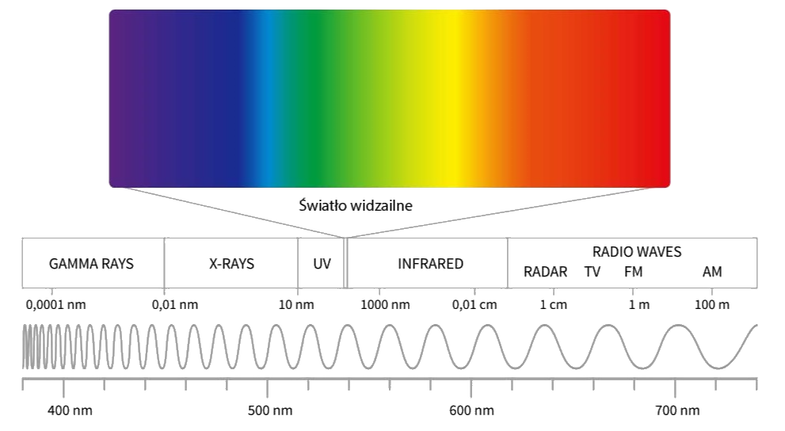
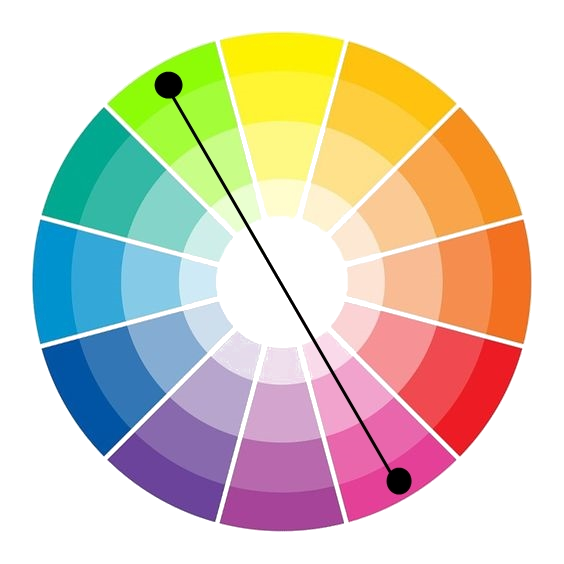
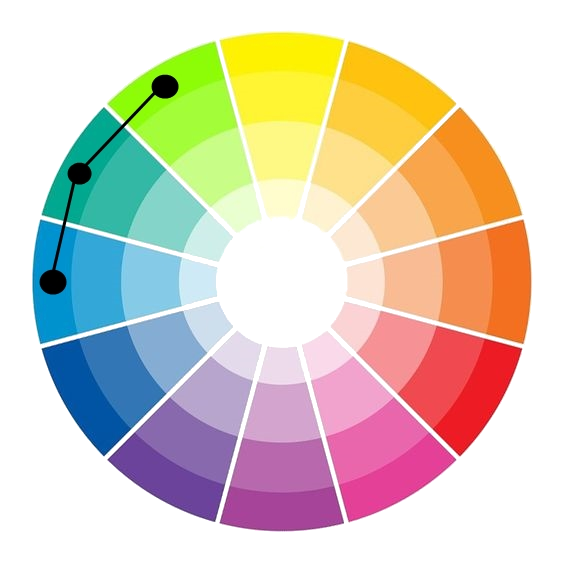

Co nauka nam mówi
 Światło rozchodzi się w próżni ze stałą prędkością 299 792 458 m/s. Jest to iloczyn długości fali i częstotliwości. Długość fali jest odwrotnie proporcjonalna do częstotliwości, kiedy jedna rośnie to druga musi spadać. W tym artykule skupimy się na świetle widzianym przez ludzkie oko, czyli tak zwanym - "spektrum światła widzialnego". Mieści się ono w przedziale od 380 nm do 750 nm. Odpowiada to zakresowi częstotliwości od 3,8·10^14 - 7,9·10^14 Hz.
Światło widzialne
Na widmo światła widzialnego składają się kolory widziane przez ludzkie oko, są to: fioletowy, niebieski, zielony, żółty, pomarańczowy, czerwony oraz ich odcienie czystych i nasyconych kolorów. Poniższa tabela przedstawia ich podział.
| Kolor | Długość fali [nm] | Częstotliwość [THz] |
|---|---|---|
| Fioletowy | ~380-430 | ~790-700 |
| Niebieski | ~450-500 | ~670-600 |
| Zielony | ~5200-565 | ~580-530 |
| Żółty | ~565-590 | ~530-510 |
| Pomarańczowy | ~590-635 | ~510-480 |
| Czerwony | ~635-770 | ~480-405 |
Jak łączyć kolory
By móc najlepiej połączyć ze sobą kolory wykorzystamy do tego koło barw.
 |
Schemat monochromatyczny | Kolory znajdują się w jednej linii od środka do krawędzi koła |
|  | Schemat dopełniający | Kolory znajdują się na wprost siebie na kole barw |
|  | Schemat harmonijny | kolory znajdują się obok siebie na kole barw |